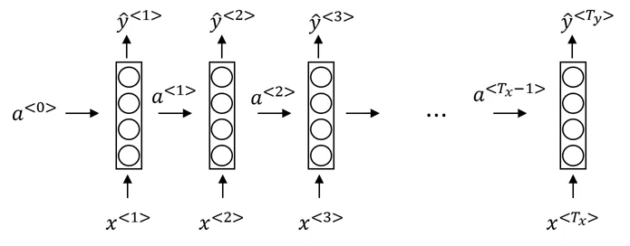
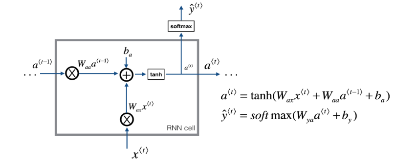
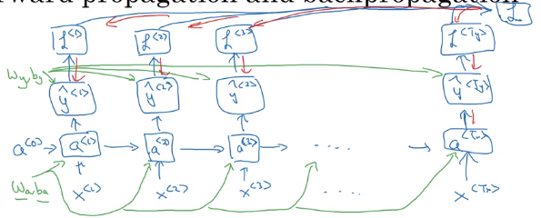

Recurrent Neural Network Basics
Recurrent Neural Networks are designed to learn information from sequential data.
We start with datasets of x time steps in a row, for example:
xwords in a sentencexsequential stock ticksxdays of weather in a row
Thus, we say that there are T_x elements in a given point of data.
In the most basic case, we have some handoff of information, a_i from layer i-1 to i. This gets run through a cell at each step and outputs:
y_ithe prediction at theithstepa_ithe carry-forward information to the same cell
Visually
Each cell calculates given information of both, this element as well as the output of the last element
from IPython.display import Image
Image('images/base_rnn.png')
Specifically at the cell level, this happens through pairs of Weight matricies and Bias terms.
W_aa,b_a: to this activation from the last activationW_ax,b_x: to this activation from the input dataW_ya,b_y: (not pictured): to this output from this activation
Image('images/rnn_cell.PNG')
The values for W_aa, W_ay, and W_ax are literally the same object, regardless which element, t, you’re looking at.
Cost Function
The output at each layer has its own cost function that looks like our typical logistic/softmax cost
$\mathcal{L}^{\langle t \rangle}(\hat{y}^{\langle t \rangle}, y^{\langle t \rangle}) = -y^{\langle t \rangle} log \hat{y}^{\langle t \rangle} -(1-y^{\langle t \rangle}) log (1-\hat{y}^{\langle t \rangle})$
The key difference here, however, is that there’s an over-arching cost L that applies across each layer
$\mathcal{L}(\hat{y}, y) = \sum_{t=1}^{T_x} \mathcal{L}^{\langle t \rangle}(\hat{y}^{\langle t \rangle}, y^{\langle t \rangle})$
Image('images/rnn_backprop.png')
This allows us a great deal of flexibility in how we construct our Recurrent Networks
Different Architectures
Image('images/rnn_types.png')
- one-to-one: Vanilla MLP
- one-to-many: text generation
- many-to-one: gender prediction based on audio clip
- many-to-many(1): language translation
- many-to-many(2): video classification